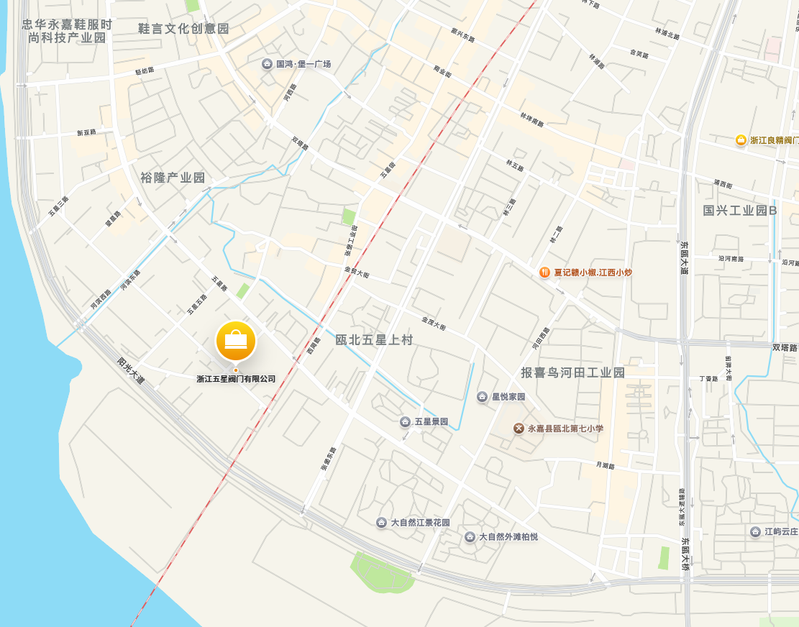

关于我们
浙江五星阀门有限公司原系永嘉五星阀门总厂。始建于上个世纪80年代，地处“泵阀之乡”的温州瓯北。
公司简介
浙江五星阀门有限公司原系永嘉五星阀门总厂。始建于上个世纪80年代，地处“泵阀之乡”的温州瓯北。位于风景迷人的瓯江东畔，这里是温福铁路与杭温高速公路的交叉口，门前的水运码头可载货直达世界各地。航空、铁路、公路、码头等多种交通交汇，形成了立体的交通枢纽，保证物流的快速集散。
公司整体工业园区占地15000平方米，建筑面积18000平方米；拥有数控机床，精密磨床、镗床、大型立体车床、包装流水线等各种设备，其中金属切割机床占85%以上。设有理化室、计量室、物理实验室，可对产品内在质量分析和实施无损探伤检验。企业管理已与世界阀门行业接轨，通过了ISO9001及国家特种设备（压力管道）TS安全注册认证。
明亮的厂房，精良的设备，精密的检测手段，现代化的管理系统，对产品形成了可靠的质量保证。我们可以生产国标、美标、日标、德标等各种高科技的阀门产品，造就了一批科技素养高的五星人精粹，现我公司已成为集产品研发、生产、销售为一体的经济实体，高新技术企业。
我们主要生产各种高压角式截止阀、止回阀、平衡阀、闸阀、保温阀、硬密封球阀、高压管件及各类钛合金材质阀门，约数百种规格的高中压阀门产品；广泛用于化工、化肥、制药、供热、石化、炼油、冶金、矿山、化纤、造纸、发电等国民经济领域。
公司始终坚持“以质量求生存，以改革求发展”和以“科技强司，聚贤兴企”的思想理念，不断研发用户急需的高新产品。与您合作，互惠共赢，我们在全国各大中城市都设有销售中心和服务部门，随时为您提供超值服务。
